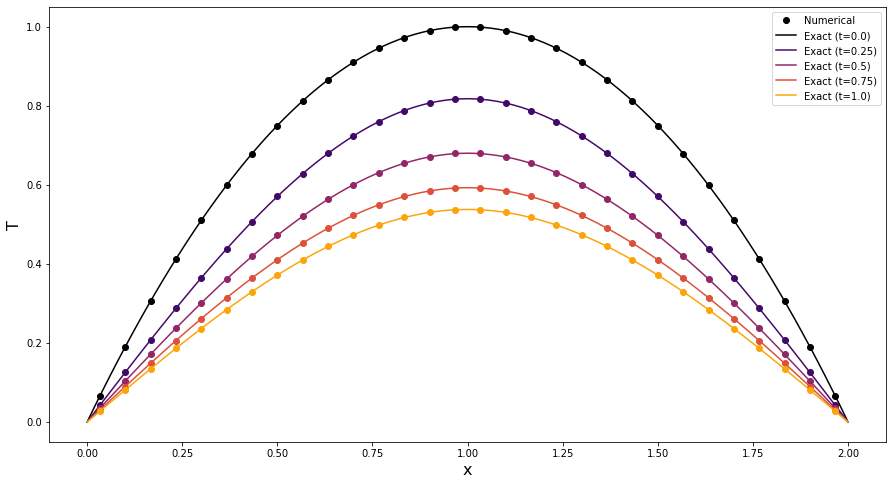

Tip
An interactive online version of this notebook is available, which can be
accessed via

Alternatively, you may download this notebook and run it offline.
Solving the heat equation in PyBaMM#
In this notebook we create and solve a model for unsteady heat diffusion in 1D, with a spatially dependent heat source term. The notebook is adapted from example 4.1.2 on pg.16 of the online notes found here.
We consider the heat equation
along with the boundary and initial conditions,
and heat source term
As in the example, we solve the problem on the domain \(0 < x < 2\) (i.e. we take \(L=2\)). We extended the example to include a thermal diffusivity \(k\), which we take to be equal to 0.75.
Building the model#
As always, we start by importing PyBaMM, along with any other packages we require.
[1]:
%pip install "pybamm[plot,cite]" -q # install PyBaMM if it is not installed
import matplotlib.pyplot as plt
import numpy as np
import pybamm
Note: you may need to restart the kernel to use updated packages.
We then load up an instance of the pybamm.BaseModel class.
[2]:
model = pybamm.BaseModel()
We now define the model variables and parameters. Note that we also need to define the spatial variable \(x\) here, so that we can write down the spatially dependent source term \(Q(x)\). Since we are solving in 1D we have decided to call the domain “rod”, but we could name it anything we like. Note that in PyBaMM variables and parameters can be given useful and meaningful names, such as “Temperature”, so that they can be easily referred to later.
[3]:
x = pybamm.SpatialVariable("x", domain="rod", coord_sys="cartesian")
T = pybamm.Variable("Temperature", domain="rod")
k = pybamm.Parameter("Thermal diffusivity")
Now that we have defined the variables, we can write down the model equations and add them to the model.rhs dictionary. This dictionary stores the right hand sides of any time-dependent differential equations (ordinary or partial). The key is the variable inside the time derivative (in this case \(T\)). To define the heat source term we use a pybamm.Function class. The first argument of the class is the function, and the second argument is the input.
[4]:
N = -k * pybamm.grad(T) # Heat flux
Q = 1 - pybamm.Function(np.abs, x - 1) # Source term
dTdt = -pybamm.div(N) + Q # The right hand side of the PDE
model.rhs = {T: dTdt} # Add to model
We now add the boundary conditions into the model.boundary_conditions dictionary. The keys of the dictionary indicate which end of the boundary the condition is applied to (in 1D this can be “left” or “right”), the entry is then give as a tuple of the value and type. In this example we have homogeneous Dirichlet boundary conditions at both ends.
[5]:
model.boundary_conditions = {
T: {
"left": (pybamm.Scalar(0), "Dirichlet"),
"right": (pybamm.Scalar(0), "Dirichlet"),
}
}
We also need to add the initial conditions to the model.initial_conditions dictionary.
[6]:
model.initial_conditions = {T: 2 * x - x**2}
Finally, we add any output variables to the model.variables dictionary. These variables can be easily accessed after the model has been solved. You can add any variables of interest to this dictionary. Here we have added the temperature, heat flux and heat source.
[7]:
model.variables = {"Temperature": T, "Heat flux": N, "Heat source": Q}
Using the model#
Now that the model has been constructed we can go ahead and define our geometry and parameter values. We start by defining the geometry for our “rod” domain. We need to define the spatial direction(s) in which spatial operators act (such as gradients). In this case it is simply \(x\). We then set the minimum and maximum values \(x\) can take. In this example we are solving the problem on the domain \(0<x<2\).
[8]:
geometry = {"rod": {x: {"min": pybamm.Scalar(0), "max": pybamm.Scalar(2)}}}
We also need to provide the values of any parameters using the pybamm.ParameterValues class. This class accepts a dictionary of parameter names and values. Note that the name we provide is the string name of the parameters and not its symbol.
[9]:
param = pybamm.ParameterValues({"Thermal diffusivity": 0.75})
Now that we have defined the geometry and provided the parameters values, we can process the model.
[10]:
param.process_model(model)
param.process_geometry(geometry)
Before we disctretise the spatial operators, we must choose and mesh and a spatial method. Here we choose to use a uniformly spaced 1D mesh with 30 points, and discretise the equations in space using the finite volume method. The information about the mesh is stored in a pybamm.Mesh object, wheres the spatial methods are stored in a dictionary which maps domain names to a spatial method. This allows the user to discretise different (sub)domains in a problem using different spatial methods.
All of this information goes into a pybamm.Discretisation object, which accepts a mesh and a dictionary of spatial methods.
[11]:
submesh_types = {"rod": pybamm.Uniform1DSubMesh}
var_pts = {x: 30}
mesh = pybamm.Mesh(geometry, submesh_types, var_pts)
spatial_methods = {"rod": pybamm.FiniteVolume()}
disc = pybamm.Discretisation(mesh, spatial_methods)
The model is then processed using the discretisation, turning the spaital operators into matrix-vector multiplications.
[12]:
disc.process_model(model)
[12]:
<pybamm.models.base_model.BaseModel at 0x7f39430e6ad0>
Now that the model has been discretised we are ready to solve. We must first choose a solver to use. For this model we choose the Scipy ODE solver, but other solvers are available in PyBaMM (see here). To solve the model, we use the method solver.solve which takes in a model and an array of times at which we would like the solution to be returned. Ths solution is then stored in the solution object. The times and states
can be accessed with solver.t and solver.y.
[13]:
solver = pybamm.ScipySolver()
t = np.linspace(0, 1, 100)
solution = solver.solve(model, t)
After solving, we can process variables using the class pybamm.ProcessedVariable. This returns a callable object which can be evaluated at any time and position by means of interpolating the solution. Processed variables provide a convinient way of comparing the solution to solutions from different models, or to exact solutions. Since all of the variables are names with informative strings, the user doesn’t need to keep track of where they are stored in the state vector solution.y. This
is particularly useful in complex models with lots of variables, and is automatically handled by the solution dictionary.
[14]:
T_out = solution["Temperature"]
2021-01-24 20:03:41,111 - [WARNING] processed_variable.get_spatial_scale(518): No length scale set for rod. Using default of 1 [m].
Comparison with the exact solution#
This example admits the exact solution
with
We construct the exact solution by summing over some large number \(N\) of terms in the Fourier series.
[15]:
N = 100 # number of Fourier modes to sum
k_val = param[
"Thermal diffusivity"
] # extract value of diffusivity from the parameters dictionary
# Fourier coefficients
def q(n):
return (8 / (n**2 * np.pi**2)) * np.sin(n * np.pi / 2)
def c(n):
return (16 / (n**3 * np.pi**3)) * (1 - np.cos(n * np.pi))
def b(n):
return c(n) - 4 * q(n) / (k_val * n**2 * np.pi**2)
def T_n(t, n):
return (4 * q(n) / (k_val * n**2 * np.pi**2)) + b(n) * np.exp(
-k_val * (n * np.pi / 2) ** 2 * t
)
# Sum series to get the temperature
def T_exact(x, t):
out = 0
for n in np.arange(1, N):
out += T_n(t, n) * np.sin(n * np.pi * x / 2)
return out
Finally, we plot the numerical and exact solutions at a series of different times. The plot demonstrates an excellent agreement between the numerical solution provided by PyBaMM (dots) and the exact solution (solid lines). Note that in the finite volume method the variable is evaluated at the cell centres.
[16]:
x_nodes = mesh["rod"].nodes # numerical gridpoints
xx = np.linspace(0, 2, 101) # fine mesh to plot exact solution
plot_times = np.linspace(0, 1, 5) # times at which to plot
plt.figure(figsize=(15, 8))
cmap = plt.get_cmap("inferno")
for i, t in enumerate(plot_times):
color = cmap(float(i) / len(plot_times))
plt.plot(
x_nodes,
T_out(t, x=x_nodes),
"o",
color=color,
label="Numerical" if i == 0 else "",
)
plt.plot(
xx,
T_exact(xx, t),
"-",
color=color,
label=f"Exact (t={plot_times[i]})",
)
plt.xlabel("x", fontsize=16)
plt.ylabel("T", fontsize=16)
plt.legend()
plt.show()

References#
The relevant papers for this notebook are:
[17]:
pybamm.print_citations()
[1] Joel A. E. Andersson, Joris Gillis, Greg Horn, James B. Rawlings, and Moritz Diehl. CasADi – A software framework for nonlinear optimization and optimal control. Mathematical Programming Computation, 11(1):1–36, 2019. doi:10.1007/s12532-018-0139-4.
[2] Charles R. Harris, K. Jarrod Millman, Stéfan J. van der Walt, Ralf Gommers, Pauli Virtanen, David Cournapeau, Eric Wieser, Julian Taylor, Sebastian Berg, Nathaniel J. Smith, and others. Array programming with NumPy. Nature, 585(7825):357–362, 2020. doi:10.1038/s41586-020-2649-2.
[3] Valentin Sulzer, Scott G. Marquis, Robert Timms, Martin Robinson, and S. Jon Chapman. Python Battery Mathematical Modelling (PyBaMM). ECSarXiv. February, 2020. doi:10.1149/osf.io/67ckj.
[4] Pauli Virtanen, Ralf Gommers, Travis E. Oliphant, Matt Haberland, Tyler Reddy, David Cournapeau, Evgeni Burovski, Pearu Peterson, Warren Weckesser, Jonathan Bright, and others. SciPy 1.0: fundamental algorithms for scientific computing in Python. Nature Methods, 17(3):261–272, 2020. doi:10.1038/s41592-019-0686-2.